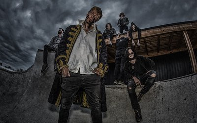

vrijdag
21:00-21:45
KETJAP
KETJAP bestaat uit 4 talentvolle muzikanten uit regio Den Bosch. Zij speelden voor het eerst samen in de JazzAcademy waarna ze met succes doorstroomden naar het conservatorium. Ze spelen veel eigen stukken geïnspireerd op jazzhelden als Herbie Hancock, Brad Mehldau en Joe Henderson.


vrijdag
22:00-22:30
Fall~
Fall~ is een interdisciplinair project onder leiding van Maury van Loon. Door middel van het combineren van o.a. muziek, beeldende kunst en film neemt Fall~ haar publiek mee op een surrealistische reis door haar wereld. Kleine pianoklanken worden gecontrasteerd met grootse elektronische dieptes, waardoor een droomlandschap zich vormt.


vrijdag
22:45-23:25
Ploegendienst
Ploegendienst trapt graag en hard. Tegen de massa, tegen dichte deuren en tegen OV-poortjes. Letterlijk dan. Figuurlijk is het een band die iedere zaal in zo kort mogelijke tijd wil slopen. Muzikaal zit het ergens tussen 80’s hardcorepunk, oi en trash. De Nederlandstalige teksten gaan vooral over de grote ongemakken des levens: toersistenterreur, kapotte telefoons en het systeem. Compacte, snoeiharde punk nummers die je direct mee wilt schreeuwen. Zanger Ray Fuego (SMIB) laat zich op het podium van zijn beste kant zien.
vrijdag
23:30-00:30
Bison Bisou
Vuige indie-rock band van drie vieze zwetende fransmannen en een weird dansende zanger uit Frankrijk. Pas één keer eerder in NL geweest, maar onmisbaar op RAUWKOST! Deze ongemakkelijk sexy band maakt een mengeling van math rock en post-punk, overgoten met een laagje noiserock. Op het podium energiek, scherp en simpelweg lekker vuil!


vrijdag
00:30-01:30
KNARS(etand)
De festivalsensatie Knars (voorheen Knarsetand) komt naar Willem Twee Poppodium met een nieuw rauw geluid. Met zeven man sterk brengt de band een overdonderende sound vol punkrock, breakbeat, elektronica, balkan en cumbia. Je wordt meegesleept door de hallen van hun gekkenhuis, langs kamers vol intense, rauwe, tegendraadse en hypnotiserende indrukken.


vrijdag
02:00-02:45